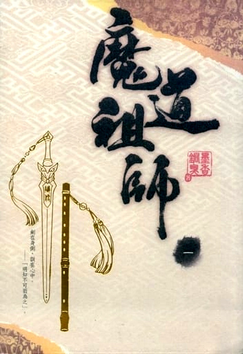

Mo Xiang Tong Xiu
Čína
Mo Xiang Tong Xiu
Čína
citace z webu fandom.com
Mo Xiang Tong Xiu (墨香铜臭, Mò Xiāng Tóng Xiù) is the pseudonym of the author of the novel Grandmaster of Demonic Cultivation. Her three danmei (耽美, Dānměi) web novels were originally published online at the Chinese web novel site JJWXC, where they became extremely popular.
Mo Xiang Tong Xiu's pseudonym originates from the fact that while she wished to study literature in college, her mother insisted she study economics. Her mother told her that she could smell the fragrance of ink in one hand and the smell of money in the other. 墨香 (Mò Xiāng) means 'black fragrance' and 铜臭 (Tóng Xiù) is a phrase meaning 'the stink of money.
seznam literatury:

- Mo Dao Zu Shi (2016, 4 vol.) - MDZS je čínský danmei(BL) román o čtyřech dílech původně vydaný online na webu JJWXC. Je zasazený do alternativní fantasy středověké číny. Hlavní postavy jsou Wei Wuxian a Lan Wangji. Zatím jsem stihl přečíst jen první knihu ze čtyř. Příběh je velmi zajímavý a dobře se prolévá dění ve světě, hlavní příběhová linka a vztah dvou hlavních postav.
- Ren Zha Fanpai Zijiu Xitong (2017, 3 vol.)
- Tian Guan Ci Fu (2021, 6 vol.)